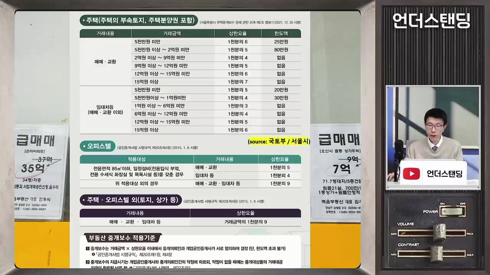
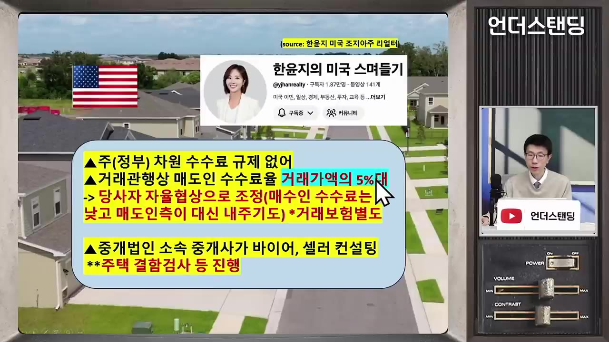
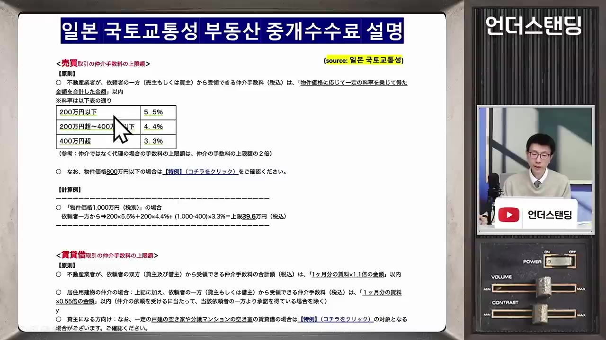
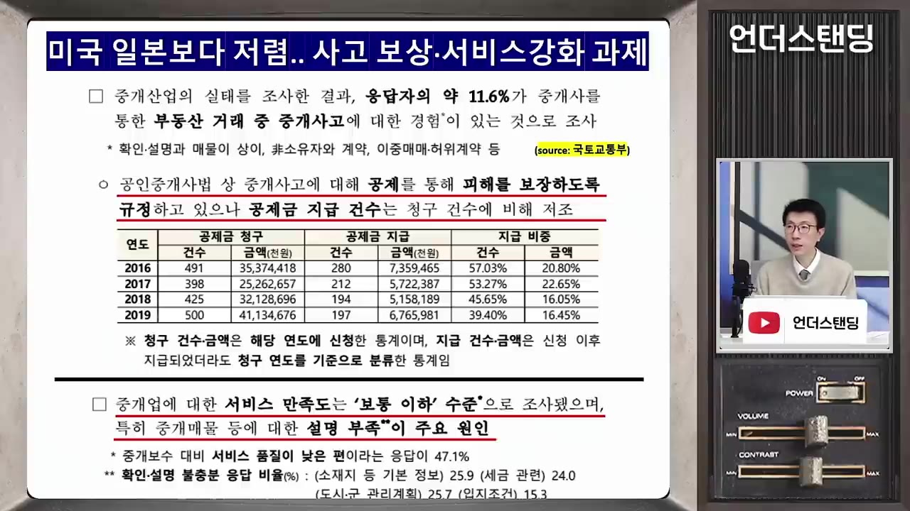

아파트 복비 1천만원 훌쩍 넘기도…이러면 법원에서 직권으로 깎습니다 (언더스탠딩 백종훈 기자)
▶ 원본 영상 보기한눈에 보기
- 한국 부동산 중개보수는 상한 요율제로, 15억 원 이상 아파트는 0.7%(한쪽 약 1,050만 원)까지 받을 수 있고, 9억 원을 넘으면 요율이 다시 올라가는 구조다.
- 법정 상한을 넘긴 부분은 무효이며, 법원은 예외적으로 중개사가 실질적 역할을 거의 하지 않은 경우에만 상한 안에서도 보수를 깎는다.
- 구두로 "복비 안 받겠다"고 한 말도 녹취 등 증거가 있으면 인정되고, 중개사를 따돌리고 직접 계약해도 연결 기여가 인정되면 보수를 줘야 한다.
- 미국(5%대 관행, 상한 없음)과 일본(상한 높음, 부대 서비스 많음)은 수수료율이 한국보다 높지만 서비스 수준도 다르다는 비교가 나온다.
- 한국은 중개업소가 약 11만 곳으로 과밀하고, 중개사고 공제 한도(2억 원)가 고가 주택 피해를 보상하기엔 부족하다는 지적이 나온다.
이런 분께 도움이 됩니다
- 집을 사고팔거나 임대할 예정이라 중개보수 계산·협상·분쟁 가능성이 궁금한 분.
- 중개보수 제도의 문제점과 해외 비교를 한 번에 파악하고 싶은 분.
핵심 내용
한국 중개보수 구조
- 상한 요율제라서 그 이하로 협상해 깎는 것은 자유이고, 상한을 넘기면 불법이다. (4:17)
- 매매 구간: 5천만 원 미만 0.6%, 5천만~2억 원 0.5%, 2억~9억 원 0.4%, 9억~12억 원 0.5%, 12억~15억 원 0.6%, 15억 원 이상 0.7%.
- 구간별 한도액은 있었으나(25만 원, 80만 원 등) 9억 원 이상 구간에는 한도액이 없다.

- 2021년 10월 개정에서 임대차 요율이 매매보다 높은 문제를 고쳐 요율을 낮췄지만, 고가 구간에서 요율이 다시 올라가는 구조는 그대로다.
- 요율이 올라가는 이유는 확인되지 않았다. 기자의 추정은 "비싼 집 거래자는 소수의 부자이니 더 내게 해도 된다"는 인식이 반영됐다는 것이다. 지금은 서울 아파트 대부분이 15억 원 이상이라 다수가 해당된다. (7:02, 26:03)
💡 집값이 3억이든 30억이든 중개 업무는 비슷한데 수수료는 열 배가 된다는 것이 핵심 문제 제기.
- 개업 공인중개사는 약 11만 명(자격증 보유 55만 명, 연 1.8만~2.2만 명 합격). 약국 약 2만 개, 편의점 5~6만 개보다 많다. 아파트 단지 입구 1층 상가를 중개업소가 차지하는 것을 높은 수익성의 증거로 본다.
법원 판례: 어떨 때 보수를 깎나
🔁 법원의 보수 판단 단계
- 계약 자유 원칙
- 상한 초과 무효
- 예외적 감액
- 광주 사례: 2021년 10월 20일 계약인데 요율이 0.9%→0.7%로 바뀐 것은 10월 19일(하루 전)이었다. 업체가 0.9%로 약정했고, 2심은 절반(0.45%)으로 깎았으나 대법원은 "상한 0.7%로 낮추는 것이 맞고 판사가 임의로 0.45%로 정하는 것은 월권"이라며 파기했다.
- 당시 공인중개사협회가 요율 인하에 반발하고 있어 몰랐을 수 없다고 기자는 본다. 판결문에 고의 언급은 없다.
- 토지 181억 원 매각 사례: 공개입찰로 이미 정해진 조건을 매수인만 바꾸는 계약 변경 합의서만 써 주고 0.9%(약 1.6억 원)를 받기로 한 건에 대해 2심은 절반으로 깎았고 대법원도 인정했다. 중개의 본질인 상대방 탐색·연결 역할을 하지 않았다는 이유다.
💡 상한 이내여도 중개의 본질적 역할을 안 했다면 깎일 수 있다.
구두 약속과 중개사 배제 사례
- "이번엔 복비 안 받겠다"는 중개사의 반복된 말을 매도인이 녹음해 제출했고, 법원은 구두 약정도 계약이라며 보수 청구를 기각했다. 중개사의 과실로 앞선 계약이 깨졌던 상황이었다. (20:13)
- 부산 사례: 매도인이 중개사 소개 매수인과 계약 조건이 어긋나 한 번 무산된 뒤, 중개사를 빼고 직접 계약했다. 법원은 중개사가 매수인을 찾아 연결한 점이 인정되므로 보수를 지급하라고 판단했다. (22:09)
- 판결문에는 매도인이 보수를 피하려 했다는 표현은 없다.
상한제 자체에 대한 찬반
- 반론: 변호사·컨설팅에는 법정 상한이 없는데 중개만 상한을 두는가. 서비스 질 차이가 있으니 "많이 받겠다, 싫으면 다른 곳 가라"가 가능해야 한다는 것이다. (26:28)
- 상한 때문에 어려운 고가 매물을 적극 찾아다니는 고수익 서비스(컨설팅비 명목)도 사후 분쟁에서 깎일 위험이 있어 제공하기 어렵다는 주장이 나온다. (44:42)
- 시골은 2억 원짜리 집을 중개해도 80만 원 안팎이라 오히려 상한이 낮다는 지적도 있다.
미국·일본 비교
| 구분 | 한국 | 미국 | 일본 |
|---|---|---|---|
| 상한 | 있음(구간별 요율) | 없음, 완전 자유경쟁 | 있음(한국보다 높음) |
| 요율 | 최대 0.7%(양쪽 각각 부담) | 관행적으로 5%대(애틀랜타 현지인 전언) | 400만 엔 초과분 3.3% 등, 구간별 누진 계산 + 소비세 10% 별도 |
| 중개 구조 | 한 중개사가 양쪽을 맡기도 함 | 매도인 중개인·매수인 중개인 각각 계약 | 중개사 설명 의무가 방대 |
| 임대차 | 매매보다 낮은 상한 | - | 관행상 한 달치 월세 |
| 서비스 | 설명 부족 불만 많음 | 중개법인 소속이 대부분, 주택 점검 등 부대 서비스, 거래보험 별도 | 책 한 권 분량 주요사항 설명서를 1~2시간 설명, 전기·가스 개통, 전등 설치, 사망·고독사 고지 의무 |
- 일본 정보는 일본 특파원들에게 확인한 것이며, 임대차 위주 경험이라 상한 근처에서 얼마나 깎는지는 특파원들도 정확히 모른다. (자막상 불명확)
- 한국은 수수료율은 낮지만 양쪽에서 받으면 두 배이고, 서비스·소비자 보호가 약하다는 결론이다. (28:45, 36:14)


소비자 보호 한계
- 중개사고 공제 한도는 2억 원이라 수도권 집값으로는 부족하다.
- 2019년 기준 소유권 사고로 공제금을 청구한 건이 500건 이상이나, 지급은 약 197건(약 40%)·청구액 기준 16%에 그쳤다. (36:34)

- 설문에서도 매물 설명(층간소음, 일조 등) 부족에 대한 불만이 많다.
- 공인중개법인은 약 1%에 불과하고 대부분 개인 사무소라 서비스 개선과 제도 개혁이 어렵다는 주장이다. (38:45)
출연자 제안
- 아파트 중개는 관리사무소가 맡고(공인중개사 고용), 수수료는 관리비로 쓰자는 아이디어. 상가 1층에 약국·떡볶이집 등이 들어올 수 있고, 중개사는 개별성 강한 주택 중개로 가야 한다는 주장이다. (42:27)
- 이는 출연자 개인 의견이며 제도적 검토를 거친 안은 아니다.
기억할 숫자·인용
- 15억 원 이상 상한 0.7%(한쪽 약 1,050만 원, 양쪽 합산 약 2,100만 원).
- 2021년 10월 19일 요율 개정(0.9%→0.7%), 이후 광주 사건은 10월 20일 계약.
- 공인중개사 개업 약 11만 곳, 자격증 보유 55만 명.
- 중개사고 공제 한도 2억 원. 2019년 지급 비율 약 40%(금액 기준 16%).
- "집값이 3억일 때와 30억일 때 하는 일은 다르지 않은데 수수료는 열 배." (2:43)
생각해볼 점
- 미국의 5%대 관행 수치는 현지인 한 명의 전언이라 일반화하기 어렵고, 소득·물가·주택 형태 차이 때문에 단순 요율 비교에 한계가 있다.
- 영상의 "중개업소 과밀=수수료 과다" 추론은 추정이며, 서울 중심 현상을 전국에 적용하기 어렵다는 점은 출연자도 언급한다.
- 판례는 사건별 사정에 달려 있어, 일반 소비자가 상한 이내 보수를 깎으려 할 때 성공 가능성은 매우 낮다. 개별 분쟁은 전문가 상담이 필요하다.
바로 해볼 일
- 거래 전 내 집값 구간의 상한 요율과 금액을 계산해 보고, 상한이 아닌 "협상 가능한 금액"임을 중개사에게 먼저 확인하기.
- 보수 관련 구두 약속(면제·감액)은 문자나 서면으로 남기기.
- 중개사 도움을 받은 매수인·매도인과는 직접 계약해도 보수 지급 의무가 생길 수 있음을 기억하기.